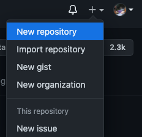
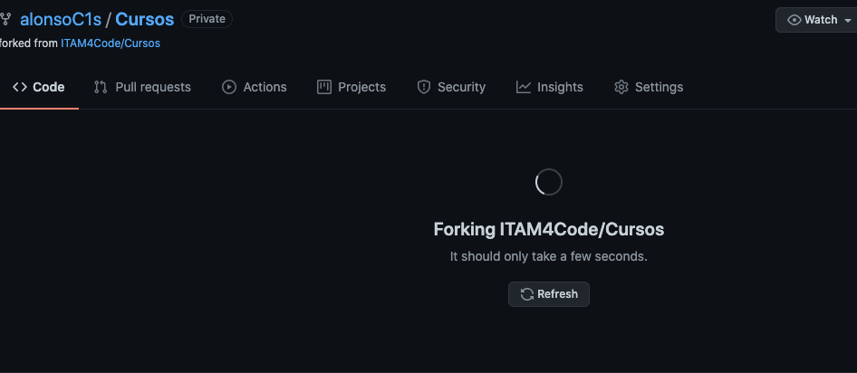

¿Qué es GitHub, y para qué sirve?
GitHub es un lugar para alojar, compartir y colaborar en proyectos de software. Actúa como repositorio en la nube para toda clase de proyectos que usen git como controlador de versiones.

Operaciones básicas
Qué es un repo?
Repo es una abreviación de repository, que se traduce a repositorio. Un repositorio se puede pensar como una "carpeta" en la que se guarda todo lo relacionado a un proyecto. El concepto de repo viene de git, y se mantiene en GitHub, y es uno de los objetos básicos de trabajar con git y GitHub. Un repo puede ser propiedad de un usuario o de una organización o equipo dentro de esta. La manera en la que estaremos trabajando es con repos que pertenecen a la organización que creamos para colaborar.
Algunas de las operaciones básicas de git que se pueden hacer sobre repos son:
- Clonar
- "Forkear"
- Modificar
Todas estas se explicarán con más detalle a continuación.
¿Cómo creo un nuevo repo?
Al entrar a GitHub podrás ver la barra principal del sitio en la parte más alta de la pantalla como se muestra en la siguiente foto.

En la parte derecha de la barra de navegación podrás encontrar tu foto de perfil, y a su lado izquierdo un botón "+". Al darle click podrás ver la siguiente pantalla:

Haz click en "New Repository" y podrás ver la siguiente página:

Por ahora, solo tienes que darle un nombre. Las demás opciones de configuración por ahora no hacen falta, las discutiremos más tarde.
Para empezar a modificar este repo puedes clonarlo a tu computadora y así tendrás una copia la cual puedes modificar y más tarde sincronizar con GitHub. El proceso de clonación se cubre con mucho más detalle en las notas dedicadas a git.
¿Qué es un fork?
Un fork es una copia exacta de un repo, con algunas particularidades. Al hacer un fork de un repo en GitHub estás copiando el contenido entero del repo junto con todo el historial de cambios que se han hecho. Además, el fork nuevo está configurado por default para que puedas incorporar los cambios más recientes que se le hayan hecho al repo original si deseas mantener tu trabajo al día, pero también para guardar tus modificaciones personales y subirlas a GitHub sin permiso del dueño del repo original. ¡Es tu propio repo!
Usualmente hacemos forks por varias razones. Una de ellas, es contribuir a un proyecto Open Source que le pertenece a alguien más. Para poder modificar el código el dueño de ese repo debería dar permiso explícito a todas y cada una de las personas que quieran aportar, lo cual no es práctico. Entonces, para sugerir cambios podemos hacer un fork del original, modificarlo, y proponer que se incorporen los cambios al original mediante un pull request. Hablaremos con mucho más detalle de pull request más tarde. Otra razón igual de válida para crear un fork es crear una versión propia y personalizada del proyecto original. Si los cambios pueden ser útiles para otras personas puedes proponer que se incorporen al original. Y si no lo son y las personas dueñas de ese repo deciden que no quieren incorporarlo, ¡puedes tener tu propia versión! Es una de las bondades del open source1
Esto pasa con relativa frecuencia. Por ejemplo Vim y Neovim.
¿Cómo hago un fork?
El primer paso para hacer un fork es identificar qué repo quieres "forkear". Por ejemplo, puedes intentar con el código fuente de estas mismas notas! En la página encontrarás algo similar a la imagen de abajo.

Para hacer un fork, da click a el botón que dice "fork" (el que tiene una flecha roja en la imagen anterior). Cuando lo hagas verás una pantalla similar a la imagen siguiente.

Espera unos segundos más y verás una página idéntica a la principal del repo que acabas de clonar. Pero no es la misma! Esta es la página de tu propio fork, lo podrás notar porque abajo del título ahora hay una leyenda que dice "forked from ...".
Cómo vamos a trabajar en GitHub
Si bien git por sí solo permite colaborar de manera ágil con miles de personas en todo el mundo, GitHub no solo provee una plataforma para alojar el código sino que da una variedad de herramientas que facilitan la construcción colaborativa de software de calidad. En ITAM For Code queremos utilizar estas herramientas para trabajar entre nosotros y para contribuir a proyectos open source mucho más grandes. Algunas de las cosas en las que nos estaremos enfocando son: issues, pull requests, milestones y projects.
Cada repo puede tener asociados sus propios issues, etc... Puedes encontrar la pestaña para accesarlos en la página principal del repo como se muestra en la foto:

Pull Requests
Los pull requests son el concepto más importante de este capítulo. Si no puedes leer el resto del capítulo, es indispensable que leas por lo menos esta sección.
Los pull requests, como su nombre sugiere, son peticiones que hace una persona que hizo cambios a un repo para que las personas encargadas del mantenimiento lo revisen y quizás incorporen los cambios al código principal. Los pull requests se pueden hacer por personas con permisos de modificar el código directamente, o por personas que hayan hecho un fork del repo porque no tienen ese permiso. Para las personas con permisos pueden hacer una petición al resto del equipo para que revisen su código y aprueben los cambios hechos. Para las personas que hacen un pull request mediante un fork es una propuesta para incorporar sugerencias. Por ejemplo para resolver un issue creado o proponer nueva funcionalidad.
¿Cómo crear un pull request?
Esta guía está enfocada a la creación de pull requests mediante
forks porque es un caso de uso más común. Para eso, se necesita
tener un fork listo. Retomamos el ejemplo de fork en los primeros
capítulos de la guía. Digamos que después de haber clonado
ITAM4Code/Cursos y hacer cambios a él1, una vez
sincronizado GitHub, aparecerá una pantalla similar a la siguiente en
la página principal del repo.
Esto puede sonar muy vago, y lo es. Los detalles de cómo clonar, modificar y "sincronizar" cambios con GitHub están en la guía específica de git.

En el área marcada con el rectángulo rojo se encuentra el área en la que se muestra el mensaje de confirmación de los cambios más recientes. En este caso, GitHub sabe que este repo es un fork de otro repo, y además nota que están en versiones distintas. En este caso el fork está adelantado al original. Es decir, si hay cambios en el fork se puede hacer un pull request para que se reflejen estos cambios en el original. Y efectivamente, en el lado derecho del recuadro GitHub da un botón para crear un pull request.

En esta primera pantalla GitHub muestra una comparación de los cambios en el fork vs. el original. Si no hay conflictos2 GitHub dará la opción de crear un Pull Request y se puede continuar el proceso dando click al botón verde.
Otro concepto que se explora más en la guía de git

En este paso vemos dos áreas para llenar información, una a la derecha y otra a la izquierda. En la izquierda se puede llenar el título del pull request y el resto de información relevante. En la sección sobre issues detallamos un poco más sobre qué se puede incluir en esta sección.
Del lado derecho hay una variedad de opciones:
- Assignees
- Labels
- Projects
- Milestones
- Issues
Sin muchos detalles, esto es lo que cada campo se refiere:
-
Permite asignar personas o equipos específicos para que revisen este issue en particular. Usualmente esto está reservado para las personas que administran el repo.
-
Los labels son etiquetas que se dan al issue. Como se mencionaba un issue puede referirse a muchas cosas y esto ayuda a organizar issues de la misma categoría. Puedes dar click y explorar las opciones, es común que cada proyecto decida qué labels quiere usar.
-
Los proyectos son tableros que permiten catalogar issues en categorías como: por hacer, en progreso, y resueltas. Se hablará más de los proyectos más tarde.
-
Los milestones son listas que se pueden crear con issues específicos ordenados por prioridad. Se crean cuando se tiene un deadline en mente y se quiere ir revisando el progreso.
-
Se pueden resolver issues mediante pull requests. Si un pull request culmina con éxito, el issue asociado se resolverá.
¿Cómo cerrar un pull request?
Una vez creado un pull request aparecerá en la pestaña de pull requests en la página principal del repo. Si se da click sobre uno en específico se puede ver una pantalla como esta:

Aquí se pueden revisar los cambios dando click en las pestañas de Commits o Files Changed. GitHub mostrará una página de comparación entre el código del fork y el original. En la página principal se pueden hacer comentarios con respecto a los cambios, y sugerir otras modificaciones para poder aceptar el pull request. Si después de ese proceso se desea hacer merge, se puede dar click al botón verde marcado para eso. En caso de que se rechacen los cambios se puede cerrar sin hacer merge
Nota: Merge es un término particular de git. Se usa para referirse al proceso de mezclar dos versiones distintas de código a un destino. En este caso, a el repo original.
Issues
Every non-trivial program contains at least one bug
--Murphy computer laws
Cuando se comparte software, es casi una garantía que la comunidad que lo usa va a encontrar bugs (o errores) en el funcionamiento del código. Lo mejor que se puede hacer en estos casos es informar a quien se encarga de dar mantenimiento al proyecto, pero hacerlo por ejemplo por emails individuales es muy ineficiente. ¿Qué pasa si yo encuentro un bug que ya fue descubierto hace semanas y lo reporto? Estaré duplicando información y haciendo más difícil arreglarlo.
Para mantener toda la información organizada para quien trabaje en el proyecto y las personas que lo usan hacemos issues en el repo. Los issues sirven como reportes con toda la información que podría ayudar a resolver el problema, y además también son útiles para los usuarios ya que pueden buscar ahí un problema que hayan tenido y quizás ahí esté la solución1. Los issues se pueden crear por muchas razones. Por ejemplo para reportar errores, comportamiento inesperado, o incluso para pedir que se agreguen cosas que nos gustaría usar. Por ahora nos enfocaremos en reportar errores.
Pro tip: Si estás usando software open source y te encuentras con un bug es muy buena idea empezar a buscar soluciones en la pestaña de bugs en el repo que tiene el código fuente. Es posible que encuentres la solución, y si no es así, podrás crear un reporte. Eso también es ayudar a la comunidad!
¿Cómo creo un issue?
Para crear un issue pues dar click a la pestaña issues en la página principal del repo. Ahí verás una pantalla como la siguiente:

Si das click en el botón verde enorme que dice "New Issue" podrás ver la pantalla siguiente y ahí empezar a llenar un reporte2.
Algunos repos te mostrarán una pequeña página con templates de issues. Si los usas y llenas la información que te piden podrás ayudar aún mejor a que se resuelva el problema.

El la parte izquierda podrás elegir un título y llenar más información. Trata de elegir un título corto pero ilustrativo. Abajo del título puedes hacer comentarios más extensos, y en muchas ocasiones se pide que se de mucha información. Puedes incorporar código, listas, links, y todo lo que permite markdown. Incluso puedes hacer referencia a otros issues por su número de issue, mencionar personas o equipos con @, o hace referencia a commit con su número de hash3.
Un número de hash es un código alfanumérico que identifica únicamente a un commit específico. Qué es un commit y qué es un hash se discuten con más claridad en las notas de git. Por ahora basta con pensar en un commit como una versión específica del código.
En la parte derecha de la pantalla vemos las mismas opciones que las discutidas en la sección sobre pull requests. Salvo que ahora estamos ligando issues a pull request y no al revés.
¿Cómo marco un issue como resuelto?
En esencia hay dos maneras de resolver un issue:
- Cerrarlo mediante un pull request
- Cerrarlo manualmente
La primera opción es sencilla conceptualmente. Si el issue actual
fue mencionado en un pull request, y ese recibe aprobación de
merge entonces el issue se cerrará automáticamente. Esto también
se puede hacer haciendo el mensaje de commit algo del estilo
closes o fixes seguido de #n donde n es el número de issue
que se puede ver al lado de su título en la página de issues. Cada
issue y pull request se numera en orden sucesivo a medida que se
crea.
Para cerrar un issue manualmente el proceso es muy simple. Al final de todos los comentarios hay un botón rojo que dice algo como "close issue". Esto solo se puede hacer si tienes permisos de escritura sobre el repo. Es decir, si formas parte del equipo al cual le pertenece o si tienes invitación para colaborar.